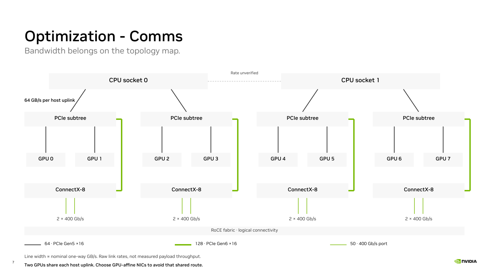

| Link | Raw nominal, one way | Line width |
|---|---|---|
| PCIe Gen5 ×16 | 64 GB/s | 4 pt |
| PCIe Gen6 ×16 | 128 GB/s | 8 pt |
| 400 Gb/s Ethernet port | 50 GB/s | 3.125 pt |
Widths share one scale: 1 pt per 16 GB/s. Values describe link rates, not measured application throughput. Gen5 becomes 63.015 GB/s after 128b/130b encoding, before packet overhead; Gen6 numbers precede FLIT/FEC and protocol costs.
The historical audit recorded four CPU-facing Gen5 ×16 links, four physical ConnectX-8 cards with eight Gen6 ×16 functions, and eight active Ethernet ports reporting 400 Gb/s. GPU endpoints support Gen5 ×16; their lower idle snapshot rate does not establish the negotiated rate during serving. Each NIC’s two ports share its PCIe capacity. The CPU-to-CPU rate and external switch wiring are unverified. Dashed CPU interconnect is intentionally outside the quantitative width scale. The fabric region represents logical connectivity.
Bridge chains are collapsed. Two GPUs share a host uplink in each of four subtrees. Source: retained hardware audit dated 25 Oct 2026; no new measurement. Technical references: PCI-SIG Gen6, NVIDIA ConnectX-8 PCIe connectivity. Diagram data.